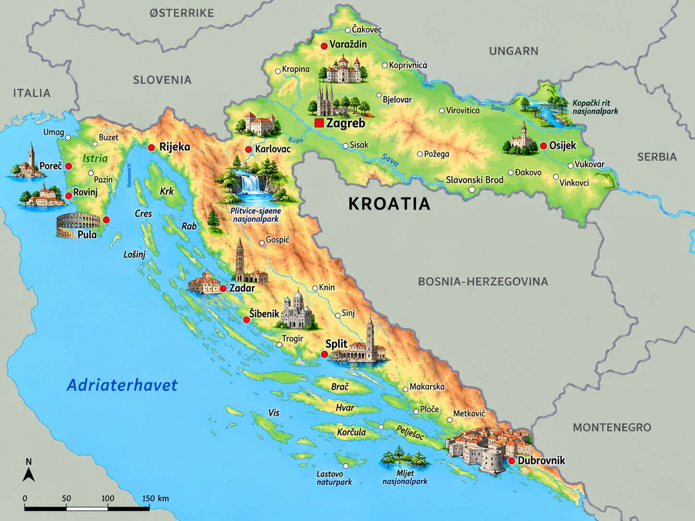
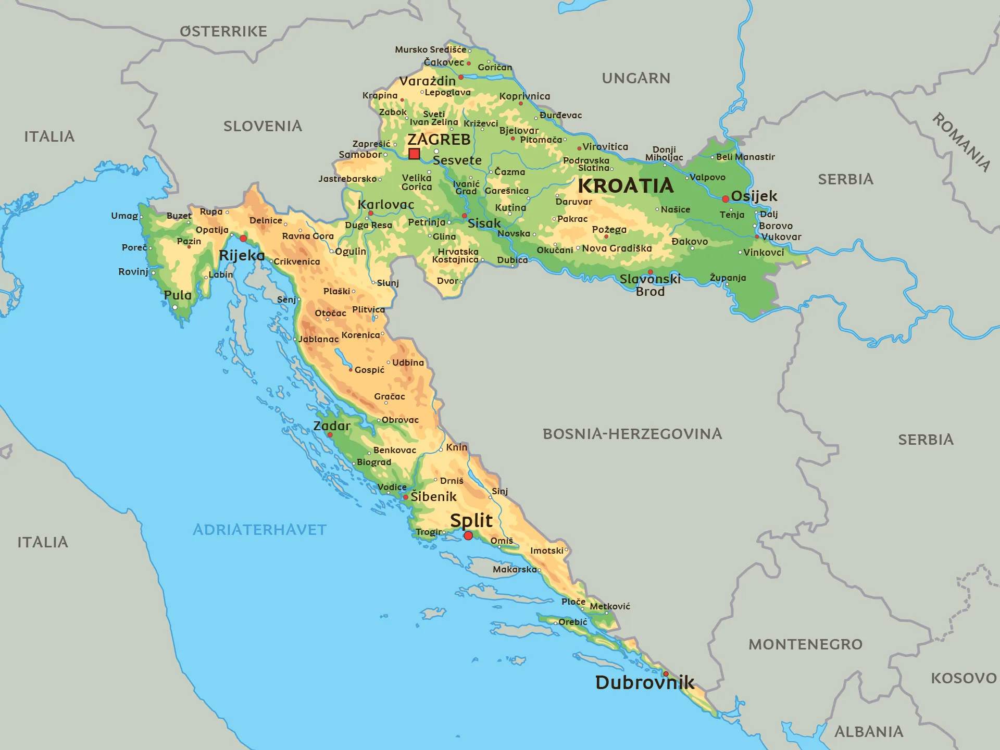

⚡ Korte fakta om Kroatia
🗺️ Kart over Kroatia
Klikk på et av kartene for å åpne og zoome i fullskjerm!


1. Natur og klima
Kroatia har en helt unik form – det ser nesten ut som en måne eller en drage! Landet har en lang og vakker kystlinje langs Adriaterhavet med over 1 200 øyer.
Dinara er Kroatias høyeste fjelltopp og raget hele 1 831 meter over havet!
Kroatia har over 1 200 øyer, men bare rundt 50 av dem bor det folk på!
Langs kysten er det Middelhavsklima med varme somre og mer enn 2 600 soltimer i året!
Høyeste fjell
- Laster...
Lengste elver
- Laster...
Største innsjøer
- Laster...
Dyreliv: I de dype skogene og fjellene bor det ulv, brunbjørn og gaupe. I Plitvice-nasjonalparken med sine 16 turkise innsjøer finnes det også sjeldne fugler og sommerfugler!
2. Folk og samfunn
I Kroatia bor det ca. 3,8 millioner mennesker. Kroatene er veldig stolte av historien sin, fotballandslaget og den vakre kysten sin!
🏢 Største byer i Kroatia
- 🔹 Zagreb: Hovedstaden og den største byen, full av parker og historiske bygninger.
- 🔹 Split: Kystby kjent for det enorme, antikke slottet Diokletians palass.
- 🔹 Andre kjente byer: Rijeka, Osijek og Dubrovnik (kjent som "Adriaterhavets perle").
☕ Kaffekultur & Kaféliv
Å "gå på kaffe" er en veldig viktig del av kroatisk kultur. Det handler ikke bare om å drikke kaffe, men å sitte ute og prate med venner i flere timer!
Det sjakkbrettmønstrede riksvåpenet kalles «Šahovnica» og finnes på alt fra flagg til landslagsdrakter.
🗣️ Språk og alfabet
I Kroatia snakker de kroatisk, et sørslavisk språk som bruker det latinske alfabetet, men med noen ekstra bokstaver som Č, Ć, Đ, Š og Ž!
3. Stat og politikk
Kroatia er en republikk og et parlamentarisk demokrati der folket velger hvem som skal styre. Landet er også medlem av EU og NATO.

Laster...
Kroatias president og statsoverhode.
Laster...
Statsministeren som leder regjeringen.
Sabor
Det kroatiske parlamentet i Zagreb.
📍 Kroatia er delt inn i 20 fylker (županije) pluss hovedstaden Zagreb som har sin egen status.
4. Kroatias historie
🏛️ Romerriket og Diokletian (Aar 305)
Den romerske keiseren Diokletian bygde et enormt slott ved Adriaterhavet – der byen Split ligger i dag!
👑 Kong Tomislav (År 925)
Tomislav ble den alleredførste kongen av Kroatia og samlet det kroatiske riket.
👔 Slips oppfinnes (1600-tallet)
Kroatiske soldater brukte fargerike tørkler knyttet rundt halsen. Franskmennene elsket det og oppfant slipset (som het "Cravat", oppkalt etter kroatene)!
🏰 Republikken Jugoslavia (1918–1991)
Gjennom 1900-tallet var Kroatia en del av fellesstaten Jugoslavia sammen med sine naboland.
🕊️ Selvstendighet og EU (1991 / 2013)
I 1991 ble Kroatia et helt selvstendig land, og i 2013 ble de med i Den europeiske union (EU).
5. Økonomi og næringsliv
Hva lever de av i Kroatia? Turisme er den aller viktigste næringen, men Kroatia er også berømt for sin teknologi, skipsbygging og fantastiske mat!
Turisme
Millioner av turistbesøk hvert år for å oppleve kysten og historiske byer.
Rimac Automobili
Kroatia lager verdens raskeste elektriske hyperbiler!

Landbruk & Oliven
Produserer prisvinnende olivenolje, vin, trøfler og ost.
Skipsbygging
Lange tradisjoner for å bygge store og moderne skip på verftene.
6. Kultur og underholdning
🏫 Skole og sport
Grunnskolen kalles «Osnovna škola» og varer i 8 år fra barna er 6–7 år gamle.
⚽ Kroatias mest populære sporter:
Fotball (VM-sølv i 2018 og bronse i 2022!), håndball og vannpolo!
🌟 Kjente kroater
- ⚡ Nikola Tesla: En av verdens største oppfinnere innen elektrisitet (født i Smiljan i Kroatia).
- ⚽ Luka Modrić: Legendarisk fotballspiller som vant Gullballen (Ballon d'Or) i 2018.
- 🐕 Dalmatineren: Den berømte hunderasen med svarte prikker kommer fra Dalmatia-regionen!
- 🧭 Marco Polo: Den berømte oppdagelsesreisende sies å være født på øya Korčula.
🧠 Test deg selv: Kroatia-Quiz!
Spørsmål laster...